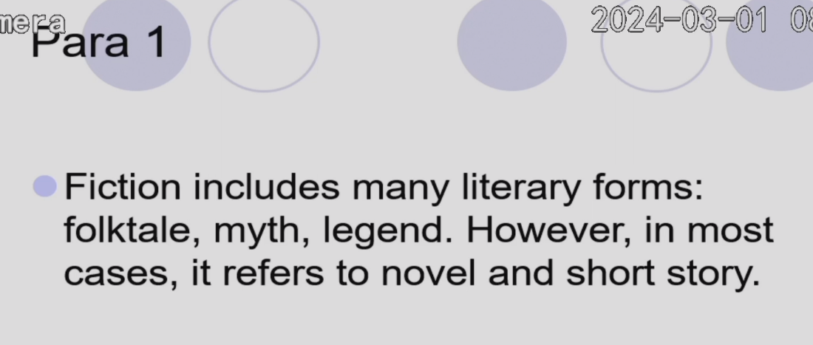

B.文学知识大总结¶
我就是把几个单元前面的elements of fiction部分给拿过来总结一下，当然可能还有后面的内容。
Unit1¶
What Is Short Story?¶
The word fiction is a rather general term that can be defined as a narrative told in prose. Therefore, fiction refers to different types of writing such as folktale, myth and legend, but it is most often associated with novel and short story.

literature 有很多form；fiction是个狭义的概念。
myth 神话 这个和legend有点不同 这本书中我们主要探讨 novel
what is literature? 可以refer to all the materials (everything)
rhythm是什么？the language of science. literature language of art 读完之后可能很开心。
arts和art的区别 liberal arts是什么？some subjects in college 大学里面人文学科的总称
对于相同的sentence, 不同的人有不同的理解。
literature will cultivate(foster) our creativity.
In the very first paragraph of their book Understanding Fiction, Cleanth Brooks and Robert Penn Warren said: "As soon as the cave man had leisure to sit around the fire while darkness covered the world beyond, fiction was born. In words, he relived, shivering with fear or gloating in victory, the events of the hunt; he recounted the past history of the tribe: he narrated the deeds of heroes and men of cunning: he told the marvels; he struggled in myths to explain the world and fate; he glorified himself in daydreams converted to narrative."

By broad definition, the short story of various kinds goes back to pre-historic times that Brooks and Warren described, but the same impulse to retell some events, real or imagined, the same passion to recount the human experience, and the same desire to express something beyond the narrated events can still be found in the written work that we read today. And we read them with just as much interest as the fireside cavemen listened to their stories, as they embody some of our basic interests, needs and desires buried deep in the human psyche.

The short story, with "story"being defined by the word "short," is necessarily limited in length and scope. Unlike the novel, which has enough space to develop a complex plot or a number of characters, a short story usually concentrates on a single incident and portrays a single character or a few characters. This kind of focused attention to a single event and to the character development makes the short story a particularly interesting form of literature. Being short, compact and convenient to handle, the short story is endowed with the advantage of Deing the favorite form for classroom discussion.（compact 紧凑的 is endowed with 被赋予了…）

An intellectually challenging short story requires close and active reading to unlock the ideas hidden behind the event. A short story, by forcing us to see things differently through the writer's sensibility, helps sharpen our awareness of the people and the world around us, and provides glimpses of insight towards a better understanding of our own experience and the experience of others. A short story does not mean the same to every reader, às the reader's own life experience plays an important part in the process of meaning production. When he is reading, he unconsciously associates memories and impressions of his past with the text and involves himself in the vital process in which meaning emerges from the experience, and thus he forms his own interpretation.

Literature learning begins with pleasure and ends in wisdom, as people say. There are two aspects of literature teaching and learning, as a cultural product and as language art. As the former,(教学目的) the literary work must be interpreted with reference to things beyond the text, things historical, social, psychological, or biographical. Thus, the moral, political, and experiential dimensions of the story can be explored by linking the story within to the world without. As the latter,(学习目的) the verbal skill and the stylistic devices（语言技巧和文体手法） of the author can also be appreciated. Novels and short stories are best examples of effective language application.

The Difference Between Literary and Non-literary Writings¶
A short story is imaginative. That is, the writer feels no obligation to stick to facts, but can freely exercise his or her own will in selecting materials and devising ways to put them together for some particular purpose.(作者没有义务坚持事实，而可以自由地选择材料并设计将它们组合在一起的方式，以实现某个特定的目的。) Even when a writer recreates historical events, or recounts his unique personal experience, his writing does not need to be seen as a report of facts, because in the process of writing he has to go through a process of selection, deletion, concentration and reorganization of the factual materials to present his own impression or view of that experience. Literary representation aims at achieving significance beyond the moment and at transcending the particular to reach the universal.

A good story is just"written. "Its author might care the least about the rules and principles of story writing, yet there are always some conventions that the author knowingly or unknowingly follows. Over the ages, written fiction has developed into a complex art. Critics have found some general principles and certain structural patterns, technical and rhetorical devices that are particular to fiction. Acquainting ourselves with these principles and features will enhance the pleasure of reading and deepen the understanding of the short story as a genre.

A writer of fiction is not a moralist.(不是道德家) He is not primarily concerned with teaching, by giving an example or a lesson, but rather, he retells an event without analyzing or evaluating it, leaving the impact of that experience to the reader. （他的主要关注点不是通过举例或教训来进行教育，而是重述一个事件而不加以分析或评价，将那段经历的影响留给读者。）By way of his special arrangement of facts and images, he encourages readers to move beyond the factual details of an event or a character. （通过他对事实和图像的特殊安排，他鼓励读者超越事件或人物的实际细节。）Or, in other words, he invites the readers to"participate"in the story, to play a role, to uncover the relations between things, to bridge the gaps and to find the message that is contained in the story. （换句话说，他邀请读者“参与”故事，扮演一个角色，揭示事物之间的关系，填补空白，找到故事中包含的信息。）Actually, readers gain their pleasure of reading in "filing in the blanks" and in discovering the meaning themselves.（实际上，读者在“填补空白”和自己发现意义的过程中获得阅读的乐趣。）

Literary texts are representational rather than referential.（表现性的而非指涉的） Referential language communicates at only one level and tends to be informational.（指涉性语言仅在一个层面上传达信息，倾向于提供信息。） The representational language of literary texts involves the readers and engages their emotions, as well as their cognitive faculties.（及读者，调动他们的情感以及认知能力。） A short story does not mean the same to every reader. A short story reader is not a passive receiver （被动的接受者）of information, but should be an active participant and contributor, as his own life experience can enrich, expand and reshape the meaning of it.（因为他的生活经历可以丰富、扩展和重塑故事的意义。） When one is reading, one is also involved in thinking, questioning, challenging the apparent surface details, and reevaluating one's own life experience. Also, literary works help readers use their imagination, enhance their empathy for others and develop their own creativity.（阅读时，人们不仅在阅读，还在思考、质疑、挑战表面的细节，并重新评估自己的生活经历。此外，文学作品帮助读者运用想象力，增强对他人的同理心，并发展自己的创造力。）

Unit2¶
The Author, the Narrator and the Reader¶
The author is the one who writes the story, but he is not the one who tells it, nor is he the one who is understood by the reader. In most cases we do not know the real author-the"author"that we know from reading his or her works is an image created in our minds through reading.（我们通过阅读其作品所认识的“作者”是我们在阅读过程中在脑海中创造的一个形象。） This image, formed by the ideas, beliefs or attitudes we find in aliterary work, is theoreticaly called the implied author.(这个由我们在文学作品中发现的思想、信仰或态度所形成的形象，理论上被称为隐含作者。) The implied author is inferred and assembled by the reader from the written text and therefore he is the hypothetical figure of the author emerging from certain narrative fiction.(因此他是从特定叙事小说中浮现出来的假设性作者形象。)


The image presented to the reader might not be consistent with the real person all the time. In his book Narrative Fiction: Contemporary Poetics Rimmon-Kenan says: "An author may embody in a work ideas, beliefs, emotions other than or even quite opposed to those he has in real life; he may also embody different ideas, beliefs and emotions in different works. Thus while the flesh-and-blood author is subject to the vicissitudes(变幻无常)of real life, the implied author of a particular work is conceived as a stable entity, ideally consistent with itself within the work.".
尽管有血有肉的作者受现实生活变幻无常的影响，但特定作品的隐含作者被认为是一个稳定的实体，理想情况下在作品内部自我一致。

Likewise, the implied reader is different from the actual readers that we are. The famous literary critic Wolfgang Iser makes a clear distinction between the two: "This implied reader is to be distinguished from actual readers, who may be unable or unwilling to occupy the position of the implied reader: thus most religious poetry presupposes a god-fearing implied reader, but many actual readers today are atheists."In order to achieve desired effect of the writing, every writer of fiction, knowingly or unknowingly, aims at a certain group of readers, or the implied readers, to whom the work is addressed.
同样，隐含读者也不同于我们作为实际读者的身份
隐含读者应与实际读者区分开来，实际读者可能无法或不愿占据隐含读者的位置：例如，大多数宗教诗歌假设有一位敬畏上帝的隐含读者，但今天许多实际读者是无神论者。
为了实现写作的预期效果，每位小说作家，无论有意还是无意，都会针对某一特定群体的读者，即隐含读者

We might not be aware of this, but the reader-the real reader-plays a very important role in the whole process. The meaning of a particular work comes alive only in the imagination of an individual reader. Fictional writing is a special kind of writing that is always indirect, telling a story rather than telling the meaning. Thus the reader is given the job to work with the author to discover or construct meaning. In fact, almost every short story has somewhat different meanings to different readers.
特定作品的意义只有在个别读者的想象中才会鲜活起来。
虚构写作是一种特殊的写作形式，总是间接地叙述故事而不是直接说明意义。
因此，读者需要与作者共同合作，发现或构建意义。
实际上，几乎每个短篇故事对不同的读者都有略微不同的意义。

The Narrator¶
Every story is told, or narrated, by someone, and the narrator of a short story is of primary importance. The narrator determines the story's point of view and the eimplications of this are far-reaching. For example, the husband, the wife, the 12-year- old daughter, the mother-in-law or the neighbor, each can give a different story with different attitudes about a broken marriage, depending on who tells it. Thus, the perspective from which a story is told determines what details are to be included in the story and how they are to be arranged and presented.
叙述者决定了故事的视角，这具有深远的影响。
例如，丈夫、妻子、12岁的女儿、岳母或邻居，每个人对破碎婚姻的讲述会因其态度不同而有所不同。
故事的讲述视角决定了哪些细节将被包含在故事中，以及这些细节将如何安排和呈现。

The narrator is not the same as the author -even when an author uses"I"as tor "the narrative voice. In many short stories, the authors prefer to use naïve narrators to tell the story. Let's assume that the author is highly intelligent, sophisticated and often well-educated, yet he or she could still choose a poorly educated, or a child, or somebody who has only a shallow understanding, or one who is muddle-headed, to tell the story. Sometimes, an author will employ an unreliable narrator, one who will not tell the truth, or the whole truth. The narrator could be biased so the facts might be partially selected or unfairly judged. Such bias and partiality of the unreliable narrator need to be put right by the reader in the process of reading.
叙述者与作者并不相同——即使作者使用“我”作为叙述声音。
假设作者是高度聪明且经常受过良好教育的人，但他仍然可以选择一个受教育程度低的，或一个孩子，或者一个只有浅显理解的人，或者一个头脑混乱的人来讲述故事。
有时，作者会使用一个不可靠的叙述者，一个不会讲真话或全部真相的人。
叙述者可能会有偏见，因此事实可能被部分选择或不公平地判断。

A gap is thus created between the author's buried meaning and the narrator's superficial understanding, or between what is implied and what is stated. The story thus leaves more room for exploration, becomes more interesting and involves the reader more deeply to excavate the meaning that the naïve narrator fails to reach and the unreliable narrator avoids or distorts. This narrative method brings together the narrator and the reader's different levels of approaches to the same subject matter, and the existence of the gap between the two levels provides more possibilities of interpretation and thus enriches the meaning of the short story.
distort 扭曲
由此在作者隐含的意义与叙述者表面的理解之间，或者在隐含的内容与明示的内容之间产生了一个差距。因此，这个故事留下了更多的探索空间，变得更有趣，并使读者更深入地挖掘天真的叙述者未能达到的意义和不可靠的叙述者回避或扭曲的意义。
这种叙述方法将叙述者和读者对同一主题的不同层次的处理方式结合在一起，而这两个层次之间的差距的存在提供了更多的解释可能性，从而丰富了短篇故事的意义。


The unreliable narrators are ofthen biased or deceitful.
Unit3¶
Character and Characterization
A character, by its original definition, refers to a person who typifies some definite quality.(典型地表现某种明确品质的人物。) That was indeed the implication in early literature, but the more recent fiction tends to avoid stereotypes, so the term more generally just refers to a person in a creative writing. The main character was formerly referred to as hero or heroine, but a more neutral term protagonist has taken their place in a literary work, because, more often than not, the main character in more recent fiction is not the heroic type, but is rather an anti-hero, one who is ill equipped to cope with the situation. On the opposite end stands the antagonist, the major character in a a narrative or drama that works against the protagonist.


A foil(陪衬角色) is a supporting character that is used to enhance the main character through contrast. (通过对比来增强主要角色的一种配角。) For example, one clear illustration of a foil is Cinderella's stepsisters, as their mean, nasty, self-centered nature contrasts and also highlights the grace and beauty of Cinderella.
(a foil)
Fictional characters can be classified into two categories, the round character and the flat character, or the dynamic character and the static character. The round character is often complex, having sometimes contradictory traits and internal conflicts that we find in real people.(具有我们在现实中发现的某些矛盾特征和内在冲突。) He grows and undergoes some kind of change in the course of the story development as he reacts to events and to other characters. Miss Brill in Unit Three is a round character.
A flat character reveals only one or two personality traits in a story and the unchanging trait or traits can be easily described in a brief summary, so often this kind of character is instantly recognizable to most readers. A flat character remains the same throughout a story and the events in the story do not alter a flat character's outlook, personality, motivation, perception or habits. When you read Unit Eleven "The Secret Life of Walter Mitty,"you may find its protagonist a typical flat character and an anti-hero.


Characterization, the process of creating imaginary characters, is a crucial part of making a story compelling. (人物塑造，即创造虚构角色的过程，是使故事引人入胜的关键部分。) Authors achieve this by providing details that make characters individual and particular.(作者通过提供使角色独特和具体的细节来实现这一点。) Good characterization gives readers a strong sense of characters' personalities and complexities and it makes characters vivid, alive and believable. There are two fundamental methods of characterization in fiction, the direct method and the indirect method. These two methods can be summarized as"telling" and "showing.”
良好的人物塑造使读者对角色的个性和复杂性有强烈的感受，并使角色生动、鲜活且可信。小说中有两种基本的人物塑造方法，直接法和间接法。这两种方法可以概括为“讲述”和“展示”。

Characterization can be direct, as when an author "tells“ readers what a character is like by description and commentary,(当作者通过描述和评论“告诉”读者角色是什么样的) for example "Beth is lazy and muddy-headed."In indirect characterization, the author shows what a character is like by portraying his actions, speech, or thoughts, expecting the reader to form an opinion of the person through the character's action, dialogue, or mannerism.(作者通过描绘角色的行动、言语或思想来展示角色的特质，期望读者通过角色的行为、对话或举止来形成对这个人的看法。) What a man does reveals what a man is. So the indirect characterization leaves the reader a job to obserye the character and to find out what he is by making judgment from what he does. The revelation of a character's mind, the inner life of thoughts and emotions, especially in the form of stream of consciousness(意识流)，is also a way of indirect characterization.(揭示角色的内心、思想和情感的内在生活，尤其是以意识流的形式，也是间接人物塑造的一种方式。)


Unit4¶
The Setting and the Theme
The setting of a piece of literature generally means the time and locale in which the story takes place, including the historical period, the immediate surroundings and the social circumstances. Therefore, setting falls into 3 categories: the historical setting refers to the approximate period of time during which a story takes place(故事发生的大致时间段); the geographical setting refers to the actual location in which a story takes place- including the physical features of a locale which help create a story's atmosphere(故事发生的实际地点——包括有助于创造故事氛围的地方的物理特征); the social setting refers to the social conventions and the general environment by which characters may be constrained.(色可能受到约束的社会习俗和一般环境。) Settings can be real or fictional, or a combination of both real and fictional elements. Most pieces of literature include more than one setting, as the narrative progresses from place to place, shifts in time periods, or moves in different social or cultural environments.
大多数文学作品包括多个背景，随着叙事从一个地方到另一个地方、时间段的变化或在不同社会或文化环境中的移动而变化。

Setting is an extremely important aspect of almost every piece of fiction. It can act almost as a nonhuman character, affecting the characters in many different ways. Setting establishes the context of a story and sometimes the plot line of a story is so tied to its setting that it becomes the central factor in the meaning of a work. For example, Hawthorne's novel The Scarlet Letter would be quite meaningless if it were separated from the time, place and social atmosphere of the puritan colony(清教 殖民区). When the setting dominates, or when a piece of fiction is written largely to present the manners and customs of a locality, the writing is described as belonging to the local color writing or regionalism.

The theme in a story is its underlying message, or the central topic explored in a literary text. In other words, it is the "big idea" or the "main idea" the author tries to convey in a particular piece of writing. Themes are generally universal in nature, and related to the conditions of being human. The theme in a work of literature thus transcends barriers of time, nation, and culture, as it concerns itself with the basic human experience and makes a story meaningful to people of any age, race or language. It is seldom stated explicitly, but instead is expressed through the characters'actions, words, and thoughts.

All works of literature contain some sort of theme, and often, a piece of writing will have more than one theme. It is also possible and common that different readers may find different themes in the same work. Readers' life experiences and inclinations differ, and, therefore, they may "see" different meanings in the same verbal picture. Understanding a story's theme is critical to reading a short story. Usually the theme of a work of literature can be summarized in one word or a few words, such as"love" or "betrayal"or "loss of innocence."Thus, we can perhaps find the theme of love and regret in "Early Autumn," of poverty and deprivation in"A Piece of Yellow Soap," and of loneliness in "Miss Brill.”


Unit5¶
Story and Plot
The word"story"as a literary term means a series of events recorded in their chronological order. “故事”这个词作为一个文学术语，指的是按时间顺序记录的一系列事件。This is the way things happen. But a short story is more than a mere recording of things. A writer will have to go through a process of selection and re-organization of the materials to form a pattern that is more than mere sequence of events, and that contains the author's opinions and is meaningful to the reader. 形成一个不仅仅是事件顺序的模式，这个模式包含了作者的观点，并且对读者有意义。So plot means how the story is presented by deliberately re-arranging the chosen materials to reveal their dramatic, thematic, and emotional significance.情节意味着通过故意重新安排所选材料来展示故事，以揭示它们的戏剧性、主题和情感意义。

There is no plot without causality.(因果关系) That is to say, the written piece that we call fiction is a structured pattern in which facts, characters and events are put in a special way to relate to one another through cause and effect.（其中事实、人物和事件通过因果关系以一种特殊的方式相互关联。） This is done through plotting, the manipulation of the materials by the writer so that meaning will stand out. 这是通过情节设计来完成的，作家通过操纵材料使意义突出。Thus, plotting is the process of converting story into plot, of changing chronological arrangement of incidents into a causal arrangement.情节设计（plotting）是将故事转化为情节的过程，是将事件的时间顺序排列转变为因果关系的排列。


The traditional plot develops through a series of conflicts, following a pattern of exposition, complication, climax, falling action and resolution. Of course, not all stories follow the traditional plot pattern. Traditional narratives are usually more tightly plotted, with everything happening for a reason or a purpose, with one event being the cause or the consequence of another, and with an ending that brings every plot-line satisfactorily together.
传统情节通过一系列冲突发展，遵循介绍、复杂化、高潮、下降动作和解决的模式。当然，并非所有故事都遵循传统情节模式。传统叙事通常有更紧密的情节安排，一切事情都有原因或目的，一个事件是另一个事件的原因或结果，并且结尾将每条情节线圆满地结合在一起。

Many modern and postmodern writers (see examples of Unit 11 and Unit 12) deliberately avoid cause-effect relations as they believe that well-plotted texts fail to render reality of life accurately. Instead, they place fragments side by side rather than follow linear development of events, making their works loosely plotted, or episodic. In some stories nothing is ever resolved at the end. This kind of non-solution is called an open ending. In an open ending, readers are not told what the protagonist will do or what will happen next. This uncertainty, on one hand, mirrors the complexity of life in which neat resolution rarely occurs; on the other hand, it leaves more room for readers'imagination.
许多现代和后现代作家（见第11单元和第12单元的例子）故意避免因果关系，因为他们认为情节紧凑的文本无法准确呈现生活的现实。相反，他们将片段并列放置，而不是遵循事件的线性发展，使他们的作品情节松散，或呈现片段化。在一些故事中，结尾什么都没有解决。这种非解决被称为开放式结尾。在开放式结尾中，读者不知道主人公会做什么或接下来会发生什么。这种不确定性一方面反映了生活的复杂性，因为整齐的解决方案很少出现；另一方面，它为读者的想象留下了更多空间。

A short story may have more than one plot-lines. In Sarah Orne Jewett's"A White Heron," there is the main plot line of Sylvia's protection of the bird, and there is another of her mental growth. Not all the plots in one piece of literary writing are of the same importance and usually there is a main plot line and one or a few subplots.
一个短篇故事可能有多条情节线。在莎拉·奥恩·朱厄特的《白鹭》中，有西尔维亚保护鸟类的主情节线，还有她心智成长的另一条情节线。一部文学作品中的所有情节并不都是同样重要的，通常有一条主情节线和一条或几条次要情节线。

3种类型的冲突conflicts


Unit6¶
Irony: Definition and Function
The typical way a writer presents his language is his style, something that marks him out as different from other writers. A writer's style may be matter-of-fact or straightforward, or he may be ironic or symbolic. In this and the next unit, we shall be dealing with irony and symbol in short stories. An author of short story uses different rhetorical devices to color his writings so as to achieve a desired adaptation of his language to his idea.（短篇小说的作者使用不同的修辞手法来为其写作增色，以实现其语言与思想的理想适应。） Irony is one of such devices that we call figures of speech. In the simplest sense, irony means that the surface meaning and the underlying meaning of what is said are not the same. The difference between what is said or described and what it actually is creates a gap leading to a special effect through readers'awareness of the existence of such disparity(差异).

Irony generally falls into three types. Verbal irony builds on the contradiction between statement and intention; dramatic irony builds on the difference of awareness between a character and a reader/audience; situational irony builds on the disparity between the expected result and the actual result. When a narrator or character says one thing but actually means another, for example, by saying "She's such a kind woman!"while meaning that she is unkind, he is using verbal irony. Dramatic irony occurs when a narrator or character knows less than readers do, for example, the naïve narration of "A Piece of Yellow Soap" in Unit Two. Situational irony occurs when what happens is at odds with what readers are led to expect, for example, the outcome of the betting in the short story "The Taste"in"Additional Story for Reading and Discussion"in Unit Five.
言语讽刺基于陈述和意图之间的矛盾
当叙述者或角色说了一件事但实际上意味着另一件事时，比如说“她真是个善良的女人！”实际上意思是她不善良
戏剧性讽刺基于角色与读者/观众之间的认知差异
戏剧性讽刺发生在叙述者或角色知道的比读者少的情况下，例如，第二单元《一块黄皂》的天真叙述。
情境讽刺基于预期结果与实际结果之间的差异。
情境讽刺发生在发生的事情与读者被引导预期的结果不一致的情况下，例如，第五单元《附加阅读和讨论故事》中的短篇故事《味道》中的赌注结果。


Unit7¶
Symbol in Literary Works
A symbol is a person or an object that, in addition to its literal meaning, suggests something more abstract or complex. As a literary device, it contains at least one more layer of meaning concealed behind an explicit expression.作为一种文学手法，它包含至少一层隐藏在明确表达背后的意义。 The symbolic meaning may be widely shared, or may be specific to the author. 象征意义可能是广泛共享的，也可能是作者特有的。For example a red rose is a conventional symbol of love. The girl in "Araby"(Unit 7) is the author's unique use of symbol, a private symbol of beauty and idealism. Symbols help create meaning in a story and expand possibilities of interpretation. A symbol does not always have a fixed meaning. The meaning of a symbol in a short story can vary depending on who reads it. It also depends on the context in which it is used. For example, a"chain"may stand for "strong relationship"or "imprisonment" in different contexts.
例如，红玫瑰是爱的一种传统象征。第七单元《阿拉比》中的女孩是作者独特的象征使用，是美丽和理想主义的私人象征。
象征有助于在故事中创造意义，并扩展解释的可能性。象征并不总是具有固定的意义。短篇故事中象征的意义可能因读者不同而异，也取决于其使用的上下文。例如，“链条”在不同的上下文中可能代表“牢固的关系”或“囚禁”。

We use the term symbolism to mean a system of symbols or symbolic representations, or the use of symbols to signify ideas and qualities by giving them symbolic meanings. Symbolism, often in capital letter, also refers to the art movement of the later 19 century that sought to express mystical or abstract ideas through the symbolic use of images. Many authors rely on symbolism to set a specific mood or emotion within a piece of literature.
我们使用“象征主义”一词来指代一个符号或象征性表征的系统，或通过赋予符号意义来表示思想和品质的做法。象征主义（通常以大写字母表示）也指19世纪后期的艺术运动，该运动试图通过象征性使用图像来表达神秘或抽象的思想。许多作者依赖象征主义来在文学作品中营造特定的情绪或情感。

When we read the very first sentence in "A Piece of Yellow Soap"(Unit Two):"She is dead now, that woman who used to hold a great piece of yellow washing soap in her hand,"the soap immediately catches the reader's eye. By its repeated occurrence in the story whenever the woman appears, we know it is a symbol-a private symbol. The new meaning of the piece of yellow soap, other than its literal meaning of some cleaning substance, stands out and cries for attention. The reader is to determine its symbolic meaning in the given context. Once the symbolic meaning is located, it leads to deeper thematic significance.
当我们阅读《一块黄皂》（第二单元）的第一句：“她现在已经死了，那位曾经手里拿着一大块黄色洗衣皂的女人，”这块肥皂立即引起了读者的注意。由于这块肥皂在故事中每当那位女人出现时反复出现，我们知道它是一个象征——一个私人象征。黄色肥皂除了字面意义上的清洁物质外，其新意义显而易见，吸引了注意力。读者需要在给定的上下文中确定其象征意义。一旦找到象征意义，它将引导读者深入理解主题的重要性。

意识流

Stream of consciousness is the continuous flow of sense, perceptions, thoughts, feelings, and memories in the human mind or a literary method of representing a blending of mental processes in fictional characters, usually in an unpunctuated or disjointed form of interior monologue.（通常以无标点或断断续续的内心独白形式呈现。）
In stream of consciousness, an author portrays a character’s continuing “stream” of thoughts as they occur, regardless of whether they make sense or whether the next thought in a sequence relates to the previous thought. These thought portrayals expose a character’s memories, fantasies, apprehensions, fixations, ambitions, rational and irrational ideas, and so on.
在意识流中，作者描绘角色持续发生的“思维流”，无论这些思维是否合理，或者序列中的下一个思维是否与前一个思维相关。这些思维的描绘揭示了角色的记忆、幻想、担忧、痴迷、抱负、理性和非理性的想法等。


Unit8¶
Romantic Fiction
【往届考题】浪漫主义的定义
Romanticism is a complex artistic, literary, and intellectual movement that began toward the end of the 18th century in West Europe. It is embodied most strongly in literature, but extends to visual arts, music and architecture. Very different historical contexts gave rise to Romantic Movement in English and American literatures.
Romanticism in literature places the individual at the center of all life and experience. It treats literature as an expression of unique and particular attitudes of the writer.

In Britain, the Romantic Movement developed with the industrial revolution and the rapid advance in science. The social changes led to a negation of the belief that literature of the Classical Period, that is, the Greek and Roman literatures represented the highest achievement and what contemporary writers could do was to follow the principles, or at most, to adapt the skills.
Romanticism, with its emphasis on imagination and emotion, is in part an escapè from the modern realities by turning inward. It glorifies the common man, advocates spirit free from traditional and religious restrains, and regards nature as a model for harmony in society, as healing power and as a refuge from the artificial constructs of civilization. 它颂扬普通人，提倡精神从传统和宗教束缚中解放出来，并将自然视为社会和谐的典范、治愈力量以及文明人工构造的避难所。Romanticists generally emphasize the importance of heart over head, that is, imagination and emotion over logic and reason. 浪漫主义者普遍强调心灵的重要性胜于理智，即想象力和情感胜于逻辑和理性。The emphasis on writer's expression differentiates Romanticism from other schools of writing, such as Realism and Naturalism which stress faithful reflection of reality. 对作家表达的重视使浪漫主义不同于其他写作流派，如强调忠实反映现实的现实主义和自然主义。
In America, Romanticism overlapped with the rise of Transcendentalism which took faith in inherent goodness of people, emphasized subjective intuition(主体的 直觉)over objective empiricism(经验)， and believed that individuals were capable of generating completely original insights. American Romanticism developed with a growing awareness of national identity, with a literature of fervent landscape descriptions, and mythicized frontier people of the first half of the 19th century.
在美国，浪漫主义与超验主义的兴起相重叠，后者相信人性的固有善良，强调主观直觉胜于客观经验主义，并相信个人能够产生完全原创的见解。美国浪漫主义伴随着国家认同感的增强而发展，拥有热情洋溢的风景描写文学，以及对19世纪上半叶边疆人民的神话化描绘。
Despite the general usage of the term, a precise characterization and specific definition of Romanticism has been the subject of debate in the fields of literary history. But for the sake of a basic understanding, the following list can serve as a brief summary of its characteristics. A Romantic writer generally-
1 regards literary work mainly as an expression of its author's feelings and attitudes;
2 puts emphasis on imagination, emotion and introspection(内省)；
3 elevates sensibility and spontaneity over logic and reason;
4 believes in the healing power of nature;
5 shows an inclination towards things exotic, mythic and primitive.
展示了对异国情调、神话和原始事物的倾向。
romanticism or romantic?


Unit10¶
Naturalistic Fiction
Naturalism refers to a type of writing that attempts to apply scientific principles of objectivity to its study of human beings. （自然主义指的是一种试图将科学客观性原则应用于人类研究的写作类型。）As a literary movement, it was most active in the late 19th and early 20h century in France, America and England. （作为一种文学运动，它在19世纪末和20世纪初的法国、美国和英国最为活跃。）The theory of Naturalism affirms that all beings and events in the universe are natural and therefore can be fully understood by the methods of scientific investigation. French writer Emile Zola, the leading Naturalist, said that the ideal of a Naturalist was the selection of truthful instances to be placed in the "laboratory conditions" of fiction, where the hypotheses of the theories about the nature and operation of the forces that worked on human beings could be put to the test.
自然主义理论肯定宇宙中的所有存在和事件都是自然的，因此可以通过科学调查的方法完全理解。法国作家埃米尔·左拉，自然主义的领军人物，曾说过，自然主义者的理想是选择真实的实例，将其置于小说的“实验室条件”中，在那里可以检验关于影响人类的力量的性质和作用的理论假设。
In an important sense, Naturalism was writers'response to the revolution in thought that modern science had produced. For example, Charles Darwin's theory of evolution provided an entirely new explanation of the origin of human beings, not as special creation by God, but as the result of evolution, gradual changes from lower species of animals to today's form. This theory told Naturalistic writers that man's existence was shaped by heredity and environment, over which he had little control. Therefore, Naturalists are pessimistic, regarding human beings as passive victims of biological nature and the natural or social environment.
从某种重要意义上来说，自然主义是作家对现代科学带来的思想革命的回应。例如，查尔斯·达尔文的进化论提供了一个全新的解释，不认为人类是上帝的特殊创造，而是作为进化的结果，即从低等动物逐渐变化为今天的形式。这一理论告诉自然主义作家，人类的存在是由遗传和环境塑造的，而人类对其几乎没有控制。因此，自然主义者持悲观态度，将人类视为生物本性和自然或社会环境的被动受害者。


Usually naturalism brings us sadness and pessimism, because human can not control his fate, his fate is determined by nature and his environment. Naturalism believes that nature is cold and indifferent to human, this causes despair. Naturalism as a kind of literature is far away from humanities. It is a special kind of literature. However, naturalism does not believe so, because evolution tells us that man was simple a part of nature. Therefore, it is foolish to speak of the struggle within man between the instinct and desire from his body and humanity --- the higher nature from his spirit. In a word, naturalism does not believe in the elevated mind of human, it holds that human is part of nature, that is, we are no different from animals.

If instinct from within and natural and social forces from without play the determining role, then there is not much place for morality. Therefore Naturalists are often amoral-that is, neither being moral nor immoral, but showing no concern about whether certain behavior is morally right or wrong-in their attitude. Some people regard Naturalism as an outgrowth of Realism. Indeed, there are things in common in the two schools of fiction. Naturalism emphasizes the more brutal aspècts of existence, and can be regarded, in a way, as a harsher version of realism. It is not the way of presentation but the ideas behind the story, the attitude of determinism, that is the major difference. Though influential for a period of time, Naturalism was however short-lived, as writers found themselves quite unable to represent the complexity of human life"scientifically"in literature.

A naturalist generally-
strives to be honest and objective and aims at a “scientific” representation of the materials; is pessimistic about human capabilities, holding a deterministic view of life; is frank in the portrayal of human beings driven by fundamental urges---fear, hunger, etc; tends to place characters in controlled environment, giving them “experimental conditions.”
Naturalist Ideas and "The Law of Life"
Though The Sea-Wolf, The Iron Heel and Martin Eden are highly acclaimed novels and read extensively, it is the "Northland Tales"that become the trademark of Jack London as a writer. The novels and short stories, including "The Law of Life," are set in the vast and cold expanse of the Arctic region, colored by his personal experience living in that region. The poverty stricken early life when he was struggling at the bottom of the urban society has also helped shape his naturalistic ideas. These ideas were strengthened by his association with socialists and his interest in Darwin and Darwinism. The setting of the frozen country is especially important, as it provides an ideal "experimental condition" for a Naturalist like Jack London. The isolated region, the land of ice and snow and the extreme temperature highlight the overwhelming power of natural forces and incapability of human beings. Life is portrayed according to Darwin's principle of survival of the fittest-or sometimes, rather survival of the tribe, as evidenced in "The Law of Life."
"The Law of Life" was first published in McClure's Magazine in 1901.This short story covers the last hours of an old former Eskimo(爱斯基摩人)chief Koskoosh. His tribe needs to be constantly mobile in search of food, but now he is blind and lame and becomes the burden of the tribe. The harsh conditions of Alaska in which they live do not allow them to keep the old and sick, as the dog-sledges carry only a limited load of the most necessary things for their survival. Old Koskoosh is left with a pile of wood to keep him warm-for a short period of time-and then things are left to the care of the Nature. Please note the elements of amoralism and determinism in the short story. The appalling tale is told in a matter-of-fact manner, allowing little room for human sentiments or moral judgment. This is not because Jack London was heartless or inhuman, but because he imagined a situation in which some of the basic ideas of Naturalism could be explored, magnified and discussed.
尽管《海狼》、《铁蹄》和《马丁·伊登》是备受赞誉并广泛阅读的小说，但成为杰克·伦敦作家标志的是他的“北地故事”。这些小说和短篇故事，包括《生命的法则》，都是以北极地区的广袤寒冷为背景，以他在该地区的亲身经历为色彩。他在城市社会底层挣扎的贫困早期生活也帮助塑造了他的自然主义思想。这些思想因他与社会主义者的交往以及他对达尔文和达尔文主义的兴趣而得到加强。冰封国家的背景尤其重要，因为它为像杰克·伦敦这样的自然主义者提供了理想的“实验条件”。这个孤立的地区、冰雪之地和极端温度突显了自然力量的压倒性力量和人类的无能。生活被描绘成达尔文的适者生存原则——有时，更确切地说是部落的生存，如《生命的法则》中所证明的那样。
《生命的法则》于1901年首次发表在《麦克卢尔杂志》上。这篇短篇小说讲述了前爱斯基摩酋长科斯库什最后的几个小时。他的部落需要不断移动寻找食物，但现在他又盲又瘸，成了部落的负担。他们生活的阿拉斯加恶劣条件不允许他们保留老人和病人，因为狗拉雪橇只能载有限的最必要的生存物资。老科斯库什被留下一堆木头来保持温暖——仅仅是短时间的温暖——然后就听凭自然的安排。请注意短篇小说中的非道德主义和决定论元素。这则可怕的故事以一种实事求是的方式讲述，几乎没有留给人类情感或道德判断的空间。这并不是因为杰克·伦敦无情或不人道，而是因为他设想了一种情况，可以在其中探索、放大和讨论自然主义的一些基本思想。